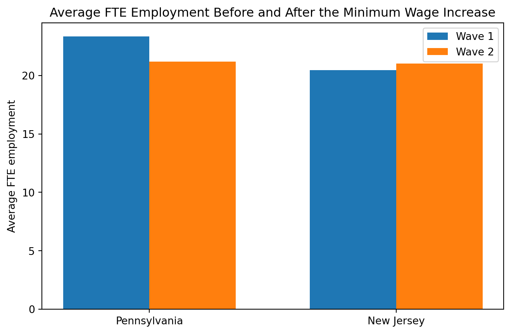

Minimum Wages and Employment: A Case Study of the Fast-Food Industry in New Jersey and Pennsylvania
Author
Chengwei Zhang
Published
April 22, 2026
Introduction
Card and Krueger (1994) study one of the most debated questions in labor economics: does a higher minimum wage reduce employment? Standard competitive theory usually predicts that when wages are forced upward, firms will hire fewer workers. Because of that prediction, minimum wage laws are often discussed as a tradeoff between helping low-wage workers and protecting jobs.
This paper became especially influential because it examined a real policy change instead of relying only on broad national trends. On April 1, 1992, New Jersey raised its minimum wage from $4.25 to $5.05 per hour, while nearby Pennsylvania did not change its minimum wage. Card and Krueger collected survey data from fast-food restaurants in both states before and after the policy change. That setting created a useful comparison: if the higher minimum wage really reduced employment, then employment in New Jersey should fall relative to employment in Pennsylvania after the increase.
In this replication, I focus on two main parts of the paper. First, I reproduce the key comparison from Table 3, which compares full-time-equivalent employment in New Jersey and Pennsylvania before and after the policy change. Second, I estimate the simple regression from Table 4, column (i), where the change in employment is regressed on a New Jersey indicator. As an additional step, I also summarize the wage and price patterns and present the employment result in a figure so that the main finding is easier to see.
Main Analysis
First, I load the public-use data. The file public.dat is a fixed-width file, so I use the codebook file to recover the column locations and read the dataset correctly. After loading the dataset, I construct the main variables used in the paper. Following the SAS file, full-time-equivalent employment is defined as the number of full-time workers plus managers plus one-half of the number of part-time workers. I also create the employment change variable, a New Jersey indicator, and a few supporting variables for wages, prices, and store status. The final public-use dataset contains 410 restaurants.
A small replication of Table 2
Before turning to the main employment result, it is useful to look at a few descriptive statistics. The table below summarizes average employment, starting wages, and meal prices in each state before and after the policy change.
This small summary already shows the core policy pattern. Before the minimum wage increase, the average starting wage was almost the same in the two states: about $4.63 in Pennsylvania and $4.61 in New Jersey. After the policy change, the average starting wage in Pennsylvania stayed almost unchanged at $4.62, while the average in New Jersey rose to $5.08. That confirms that the policy shock is clearly visible in the data.
The table also shows that prices rose somewhat in New Jersey. The average full meal price increased from $3.35 to $3.41 in New Jersey, while Pennsylvania stayed around $3.03. This suggests that some of the higher labor costs may have been passed on to consumers through prices rather than through lower employment. That point is not the main focus of my replication, but it helps interpret why employment may not have fallen even after wages increased.
Replication of Table 3
I now replicate the main comparison from Table 3. I calculate average employment in Pennsylvania and New Jersey in wave 1, wave 2, and the change over time.
Show code
grouped = df.groupby("NJ")[["EMPTOT", "EMPTOT2", "DEMP"]].mean()table3 = pd.DataFrame({"Pennsylvania": grouped.loc[0],"New Jersey": grouped.loc[1]})table3["NJ - PA"] = table3["New Jersey"] - table3["Pennsylvania"]table3.index = ["FTE employment in February 1992","FTE employment in November 1992","Change in FTE employment"]table3.round(2)
Pennsylvania
New Jersey
NJ - PA
FTE employment in February 1992
23.33
20.44
-2.89
FTE employment in November 1992
21.17
21.03
-0.14
Change in FTE employment
-2.28
0.47
2.75
This is the central result of the replication. In February 1992, average full-time-equivalent employment was higher in Pennsylvania than in New Jersey, with a gap of about 2.89 workers. By November 1992, that gap had almost disappeared. Employment fell in Pennsylvania from 23.33 to 21.17, while employment in New Jersey rose slightly from 20.44 to 21.03.
The most important number is the last row, the change in employment. Pennsylvania experienced a decline of about 2.28 FTE workers, while New Jersey experienced an increase of about 0.47. The difference-in-differences estimate is therefore 2.75. This means that employment changed more favorably in New Jersey than in Pennsylvania after the minimum wage increase.
This result is important because it goes against the simple prediction that a higher minimum wage must reduce employment. If that standard story fully explained what happened in this market, then New Jersey should have shown a larger employment decline than Pennsylvania after the policy change. Instead, the opposite pattern appears in the data. My replicated table therefore matches the main qualitative conclusion of Card and Krueger (1994): there is no evidence here that the higher minimum wage reduced employment in this sample of fast-food restaurants.
Something Additional
As an additional analysis, I replicate Table 4, column (i). This is a regression of the change in employment on a New Jersey dummy. Following the SAS file, I use the subset of stores with valid employment changes and valid wage information across waves, or stores that were permanently closed in wave 2.
The coefficient on the New Jersey dummy is about 2.326. This is the regression version of the simple policy effect: it measures how employment changed in New Jersey relative to Pennsylvania. The estimate is positive, which again means that employment outcomes were better in New Jersey than in Pennsylvania after the minimum wage increase. The standard error is about 1.192, so the estimate is only marginally significant, but the direction of the effect is still the main point. It clearly does not support a negative employment effect in this sample.
This regression is helpful because it shows that the main conclusion is not coming only from a visual comparison of group means. Even in a formal regression setup, the coefficient still points in the same direction. That makes the result more convincing and shows that the descriptive table and the regression evidence are consistent with each other.
To make the same result easier to see, I also present it graphically.
Show code
plot_df = pd.DataFrame({"State": ["Pennsylvania", "New Jersey"],"Wave 1": [grouped.loc[0, "EMPTOT"], grouped.loc[1, "EMPTOT"]],"Wave 2": [grouped.loc[0, "EMPTOT2"], grouped.loc[1, "EMPTOT2"]]})x = np.arange(len(plot_df["State"]))width =0.35fig, ax = plt.subplots(figsize=(8, 5))ax.bar(x - width/2, plot_df["Wave 1"], width, label="Wave 1")ax.bar(x + width/2, plot_df["Wave 2"], width, label="Wave 2")ax.set_xticks(x)ax.set_xticklabels(plot_df["State"])ax.set_ylabel("Average FTE employment")ax.set_title("Average FTE Employment Before and After the Minimum Wage Increase")ax.legend()plt.show()

The figure presents the same pattern in a more intuitive way. Pennsylvania starts with higher employment in wave 1, but then declines in wave 2. New Jersey starts lower, but remains stable or increases slightly. Visually, this makes it easier to understand why the difference-in-differences estimate is positive.
Overall, this additional analysis strengthens the replication. The descriptive statistics show that wages clearly rose in New Jersey after the policy change. The employment table shows that employment did not fall relative to Pennsylvania. The regression confirms the same conclusion in a more formal way. Together, these results support the paper’s main claim that the New Jersey minimum wage increase did not reduce employment in this sample of fast-food restaurants.